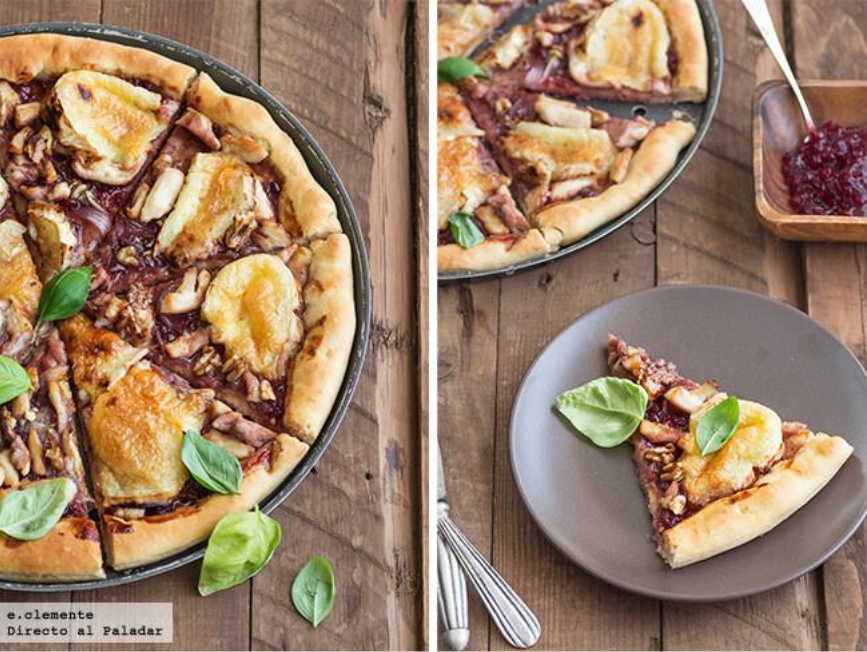
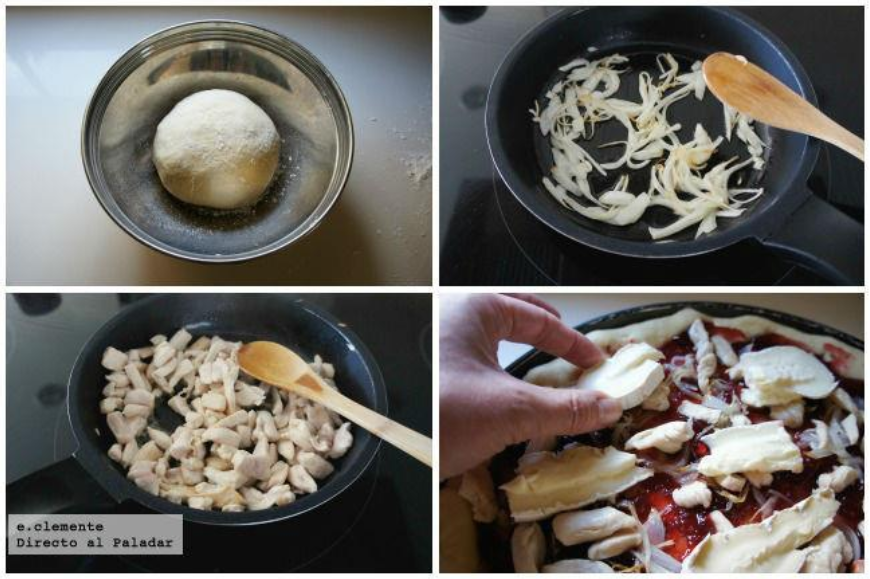

Me encantan cómo combinan los quesos de pasta blanda con las mermeladas de frutos rojos, y si habitualmente esta unión forma parte de mis tablas de quesos, esta vez quise juntar estos dos ingredientes en una pizza de pollo, queso brie y arándanos. Si os gustan los sabores dulces y salados, es una pizza que os va a cautivar.
Como siempre, podéis hacer en casa la base de la masa de pizza (1), muy recomendable, o bien comprar una en blanco y ponerle vosotros el relleno encima. Hay masas comerciales de calidad decente que pueden sacarnos de un apuro cuando no siempre tenemos tiempo
Comenzaremos preparando nuestra masa casera de pizza. Para ello en un bol echamos el agua templada y el aceite, la levadura seca y el azúcar. Removemos con unas varillas y dejamos diez minutos para comprobar que la levadura hace espuma y funciona correctamente.
Entonces vamos añadiendo la harina con la sal y amasando con las manos hasta lograr una masa elástica y que no se pegue. La dejamos en un recipiente en un lugar templado una hora para que leve. Cuando pase el tiempo desgasificamos y la estiramos encima de una bandeja de horno o piedra de pizza, aún crecerá todavía un poco mientras que se prepara el relleno. Precalentamos el horno a 220 grados con calor por abajo
Seguimos picando la cebolleta en rodajas finitas y la pechuga de pollo en tiras. Colocamos una sartén al fuego y calentamos el aceite de oliva, sofriendo a fuego lento la cebolleta durante unos minutos, una vez hecha la retiramos y salteamos el pollo. Salamos la carne. Pasamos todo para un plato y reservamos.

Extendemos la mermelada de arándanos por la base de la pizza como si fuese la salsa de tomate clásica. Repartimos encima la cebolleta, los trozos de queso brie y el pollo. Esparcimos las nueces en trozos. Horneamos durante 25 minutos
Fuente:Directo al paladar (2)